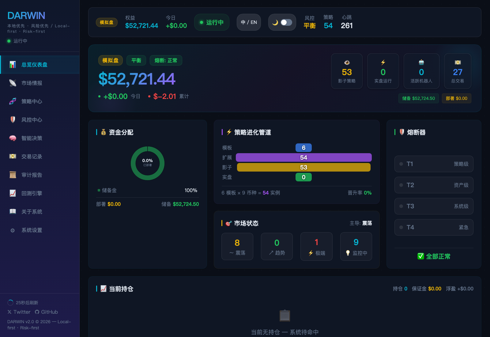
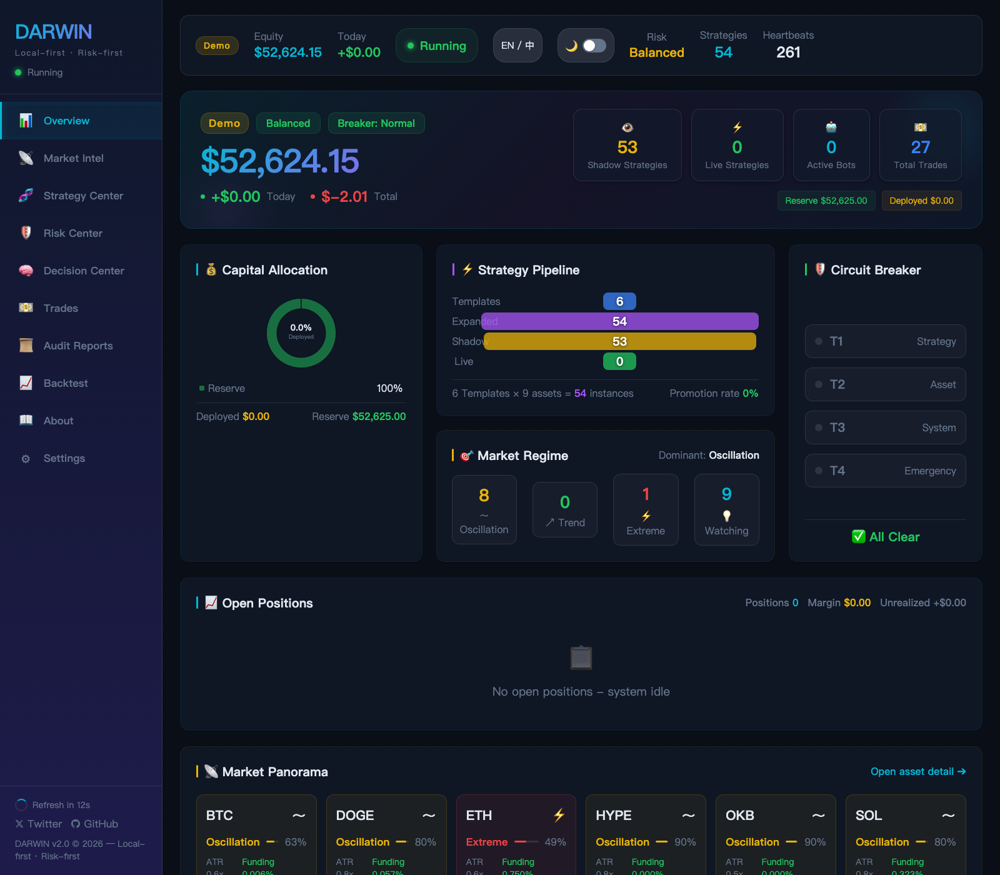
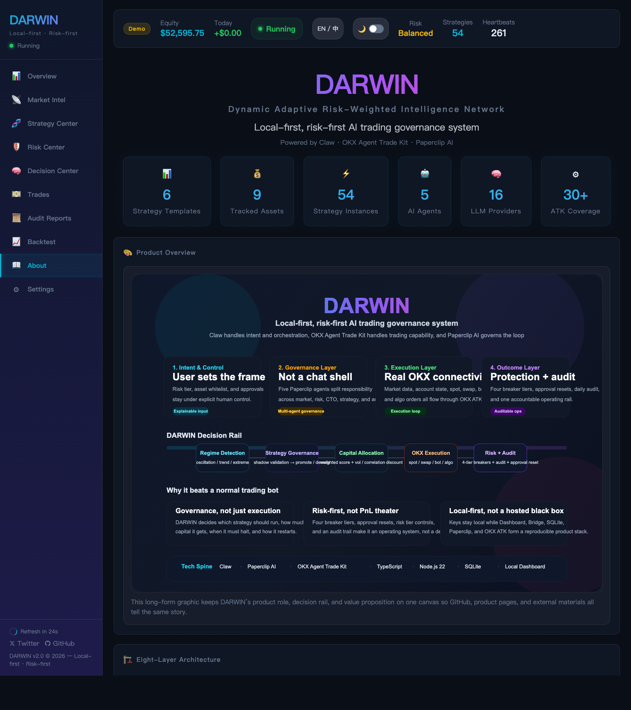
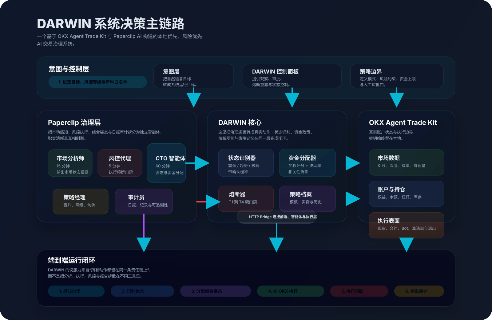
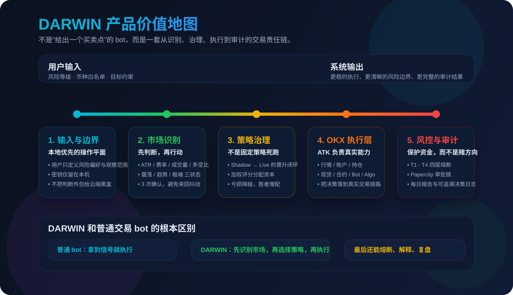

DARWIN
Local-first
Risk-first
Read-only public demo
一个基于 OKX Agent Trade Kit 的 AI 交易治理系统
这不是一个只会给买卖建议的信号页面，而是一个公开只读的产品演示。
DARWIN 将市场识别、策略治理、真实执行、风险熔断和审计报告组织在同一条责任链上，
用稳定快照向评委展示完整系统能力。
Stable Snapshot
$52,480.35
今日 +$132.47，风险等级 Balanced，熔断状态 All Clear
Why this public demo
公开页面只保留只读展示，不依赖本地凭证，不暴露交易密钥，也不触发真实下单。
系统摘要
DARWIN 不是交易信号机器人，而是一个把市场识别、策略切换、真实执行、风险熔断和审计报告
放在同一条责任链上的 AI 交易系统。这个公开 Demo 使用固定快照，专门用于稳定展示产品结构与真实运行形态。
组合权益
$52,480.35
Local demo snapshot
今日盈亏
+$132.47
14 executions today
策略运行
8
3 live · 4 shadow · 1 paused
持仓与风险
3
3 open positions · 0 active breaker tiers
OKX Agent Trade Kit: market / account / execution / bot / algo
Paperclip AI: governance / approvals / audit
Public demo: read-only
市场状态与策略治理
DARWIN 不假设所有市场都适合同一种策略。它先识别市场状态，再决定哪类策略优先运行，并保持足够储备金应对状态切换。
BTC
震荡 Oscillation
置信度 82%
ATR 0.94 · 费率 0.011%
ETH
极端 Extreme
置信度 74%
ATR 1.88 · 成交量扩张 2.11x
SOL
趋势 Trend
置信度 78%
ATR 1.26 · 成交量扩张 1.63x
XRP
震荡 Oscillation
置信度 71%
ATR 0.86 · 费率 0.004%
DOGE
震荡 Oscillation
置信度 68%
ATR 1.04 · 噪声较高
TRX
趋势 Trend
置信度 63%
ATR 1.18 · 方向明确
当前分配 / Allocation
$12,840
24.5% deployed · $39,640 reserve capital
策略主链路 / Strategy rail
Spot Grid · BTC
Contract Grid · ETH
Trend Trailing · SOL
Funding Arb · BTC
实时执行快照
这一部分展示 DARWIN 如何把策略治理落到真实执行层。公开 Demo 不发起交易请求，但完整保留了
市场、账户、执行、持仓和日志之间的关系。
当前持仓 / Live positions
| Pair |
Side |
Lev |
PnL |
| BTC-USDT-SWAP |
Long |
3x |
+$145.20 |
| ETH-USDT-SWAP |
Short |
3x |
+$82.40 |
| SOL-USDT-SWAP |
Long |
2x |
+$40.80 |
交易执行摘要 / Execution summary
| Strategy |
Trades |
PnL |
Status |
| 现货网格 · BTC |
23 |
+$182.45 |
live |
| 合约网格 · ETH |
14 |
+$121.20 |
live |
| 趋势追踪 · SOL |
12 |
+$96.34 |
live |
| 资金费率套利 · BTC |
10 |
+$43.12 |
shadow |
| 合约马丁格尔 · DOGE |
11 |
-$56.80 |
paused |
风险控制与审计
对交易系统来说，最关键的不是“会不会下单”，而是“什么时候不该下单”。DARWIN 把风险熔断和审计报告
放在主链路里，而不是附属模块。
最近风险事件 / Breaker history
2026-03-18 11:42
T1 Strategy breaker triggered on 合约马丁格尔 · DOGE
Drawdown reached 6.7%, strategy paused and later downgraded to watch state.
2026-03-17 20:25
T2 Asset breaker triggered on ETH exposure
Extreme volatility pushed ETH above the configured asset-level threshold.
最新每日报告 / Latest daily report
BTC 维持震荡区间，SOL 延续趋势结构，ETH 仍处于极端波动监控状态。
现货网格 · BTC 与合约网格 · ETH 继续贡献区间收益；趋势追踪 · SOL 保持正向浮盈；
资金费率套利 · BTC 维持低风险正收益；合约马丁格尔 · DOGE 处于暂停观察。
四层熔断器保持清空，系统仍在均衡风险等级内运行。
界面预览
下面是 DARWIN 本地产品界面的真实截图。评委可以通过这个公开 Demo 快速理解系统结构，
再进入 GitHub 查看实现细节。

总览仪表盘：组合状态、策略运行、风控状态与系统健康。

英文视图：方便快速理解主模块与系统链路。

产品与架构页：展示 DARWIN 的角色定义、主链路和核心价值。
系统架构与产品价值

系统主链路：从意图、治理、执行，到风控与审计。

产品价值地图：DARWIN 的重点不是喊单，而是可运行、可约束、可复盘。